Disaster Response
I participated in the Coalition Warrior Interoperability Demonstration (CWID). We simulated disasters to test communication methods between emergency operations agencies.
Our Java application took hazardous materials sensor data and distributed it using the Common Alerting Protocol (CAP). The data was also presented on a web interface. My main development task was integrating Twitter and Facebook functionality into our existing application.
Over CWID's 3-week span, I demonstrated our software to people from a number of agencies, including officers from all U.S. military branches.
During the demonstration, we recorded findings which I used to wireframe a redesign of our mobile app.
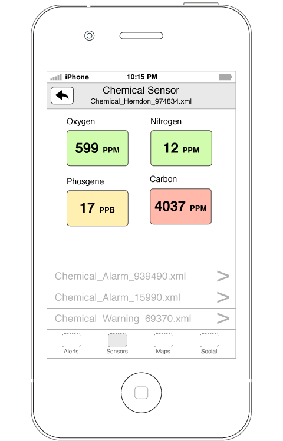
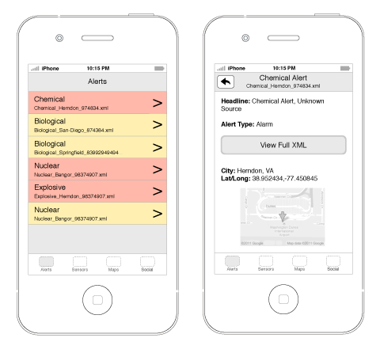
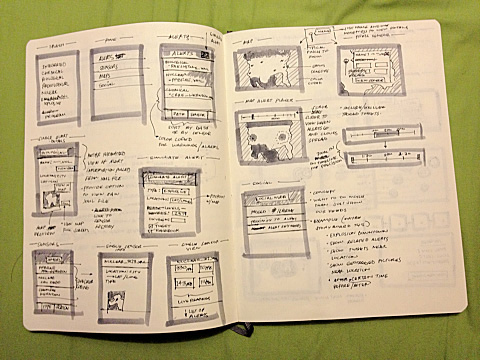
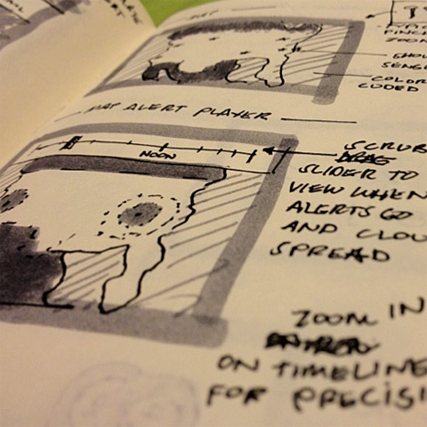
Cesperson.com
Cesperson.com is my personal photography blog.
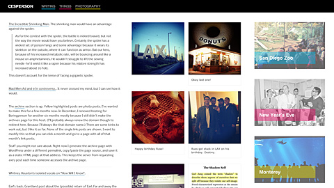
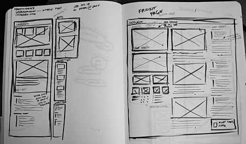
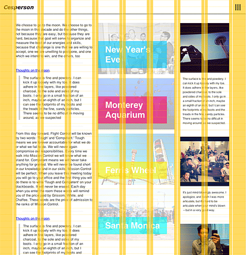
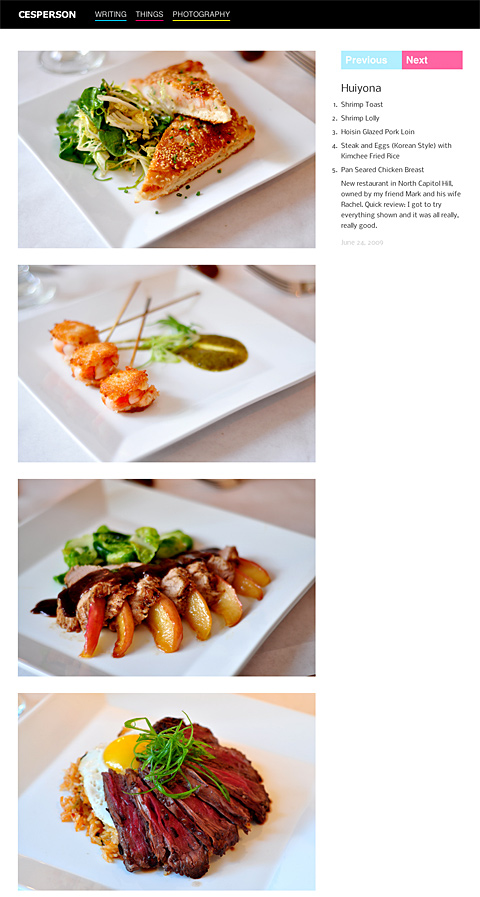
365 Design Project
I've maintained a personal photography blog since 2004. I redesigned again in 2012 and wrote more about it than you probably care to know.
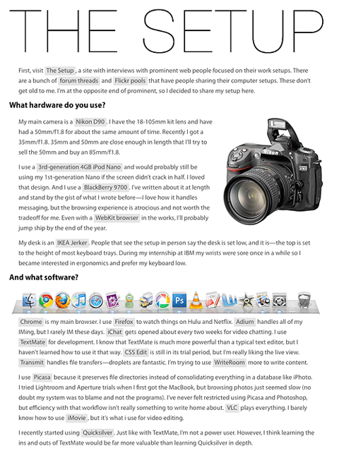
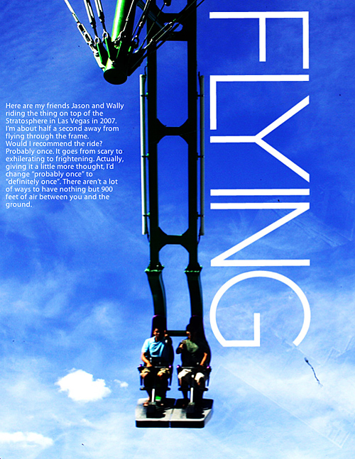
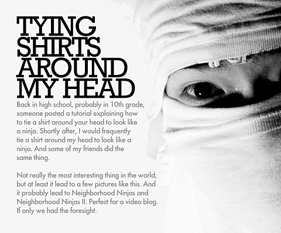
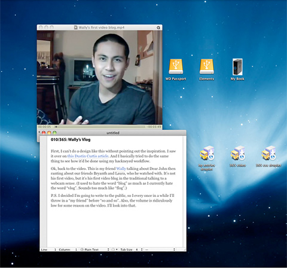
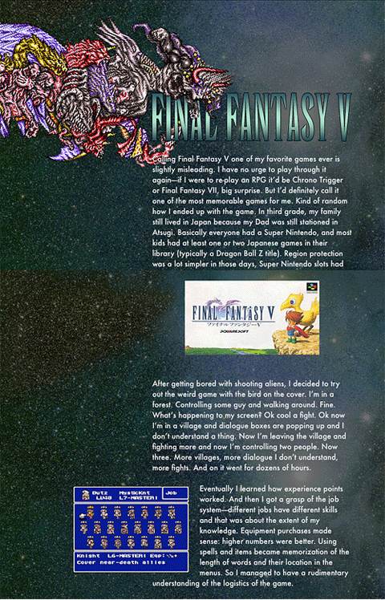